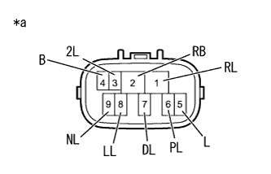

DTC P0705/C2 T/MコントロールSW不良 |
| DTC No. SAE/TCCS | DTC検出条件
| 点検部位 |
|---|---|---|
| P0705/C2* |
|
|

| 手順1 | ワイヤハーネスおよびコネクター点検（電源電圧） |
参照。ニュートラルスタートスイッチASSYのコネクターB9を切り離す。
SST(トヨタエレクトリカルテスター)を使用して、端子間の電圧を測定する。
| 点検端子 | 点検条件 | 基準値 |
|---|---|---|
| B9-2 (RB) - ボデーアース | IG ON | 11 to 14V |
| B9-2 (RB) - ボデーアース | IG OFF | 1V未満 |
| *a | 車両ワイヤハーネスコネクター前側 (ニュートラルスタートスイッチASSY接続コネクター) |
|
| ||||
| OK | |
| 手順2 | ニュートラルスタート スイッチASSY単体点検 |
|  |
ニュートラルスタートスイッチASSYのコネクターB9を切り離す。
SST(トヨタエレクトリカルテスター)を使用して、端子間の抵抗を測定する。
| 点検端子 | 点検条件 | 基準値 |
|---|---|---|
| 2 (RB) - 6 (PL) | シフトレバー位置Pポジション | 1Ω未満 |
| シフトレバー位置Pポジション以外 | 10 kΩ以上 | |
| 4 (B) - 5 (L) | シフトレバー位置PまたはNポジション | 1Ω未満 |
| シフトレバー位置PまたはNポジション以外 | 10 kΩ以上 | |
| 1 (RL) - 2 (RB) | シフトレバー位置Rポジション | 1Ω未満 |
| シフトレバー位置Rポジション以外 | 10 kΩ以上 | |
| 2 (RB) - 9 (NL) | シフトレバー位置Nポジション | 1Ω未満 |
| シフトレバー位置Nポジション以外 | 10 kΩ以上 | |
| 2 (RB) - 7 (DL) | シフトレバー位置Dポジション | 1Ω未満 |
| シフトレバー位置Dポジション以外 | 10 kΩ以上 | |
| 2 (RB) - 3 (2L) | シフトレバー位置2ポジション | 1Ω未満 |
| シフトレバー位置2ポジション以外 | 10 kΩ以上 | |
| 2 (RB) - 8 (LL) | シフトレバー位置Lポジション | 1Ω未満 |
| シフトレバー位置Lポジション以外 | 10 kΩ以上 |
| *a | コネクター非接続状態 (ニュートラルスタートスイッチASSY) |
|
| ||||
| OK | |
| 手順3 | ワイヤハーネスおよびコネクター点検（ニュートラルスタートスイッチASSY - エンジンコントロールコンピュータ） |
参照。IG ONにする。
SST(トヨタエレクトリカルテスター)を使用して、端子間の電圧を測定する。
| 点検端子 | 点検条件 | 基準値 |
|---|---|---|
| D54-11 (R) - ボデーアース |
| 11 to 14V |
| 1 V未満 | |
| D54-10 (D) - ボデーアース |
| 11 to 14V |
| 1V未満 | |
| D54-9 (2) - ボデーアース |
| 11 to 14V |
| 1V未満 | |
| D54-8 (L) - ボデーアース |
| 11 to 14V |
| 1V未満 |
| *a | コネクター接続状態 (エンジンコントロールコンピュータ) |
|
| ||||
| OK | |
| 手順4 | ワイヤハーネスおよびコネクター点検（エンジンコントロールコンピュータ - ニュートラルスタートスイッチASSY - ボデーアース） |
参照。ニュートラルスタートスイッチASSYのコネクターB9を切り離す。
エンジンコントロールコンピュータのコネクターB37を切り離す。
SST(トヨタエレクトリカルテスター)を使用して、端子間の抵抗を測定する。
| 点検端子 | 点検条件 | 基準値 |
|---|---|---|
| B9-4 (B) - B37-8 (NSW) | 常時 | 1Ω未満 |
| 点検端子 | 点検条件 | 基準値 |
|---|---|---|
| B9-4 (B)およびB37-8 (NSW) - 他の端子間およびボデーアース間 | 常時 | 10ｋΩ以上 |
|
| ||||
| OK | ||
| ||